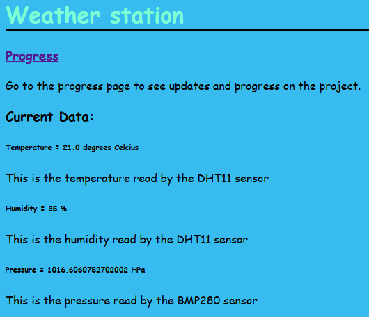

This page is for all past progress as well as future plans.
Updating website to include more information about the project.
Setup Github pages to create website. Got index page setup with the stylesheet. Spent 17723492312387 hours trying to get 3 live data points to appear on website, drafting the website on vscode.
Finally got data to display by using javascript fetch function, which then broke when updating actual Github page, as the top secret key used to access the data was in the code. Spent another while to fix the code so that it could get the data without the top secret key. Eventually worked.
fetch(https://io.adafruit.com/api/v2/coolguy_morin4/feeds/temperature)
.then(response => {
if (!response.ok) {
throw new Error(`HTTP error! Status: ${response.status}`);
}
return response.json();
})
.then(data => {
console.log("Fetched Data:", data); // Print data to console
//display data on a webpage
displayTemp(data)
})
.catch(error => {
console.error("Error fetching data:", error);
});
function displayTemp(data){
const temp = data["last_value"];
const tempDiv = document.getElementById("temperature");
const heading = document.createElement("h6");
heading.innerHTML = "Temperature = " + temp + " degrees Celcius";
tempDiv.appendChild(heading);
}